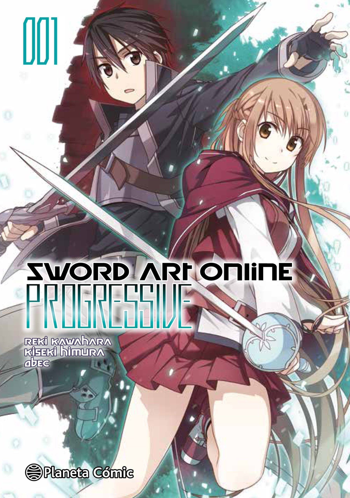
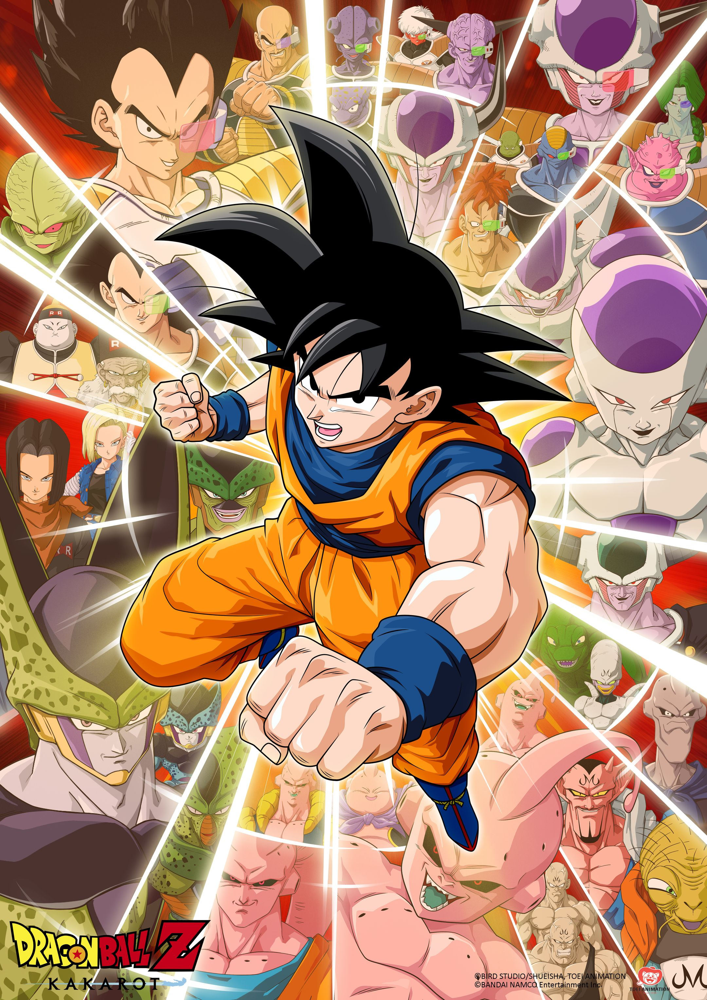
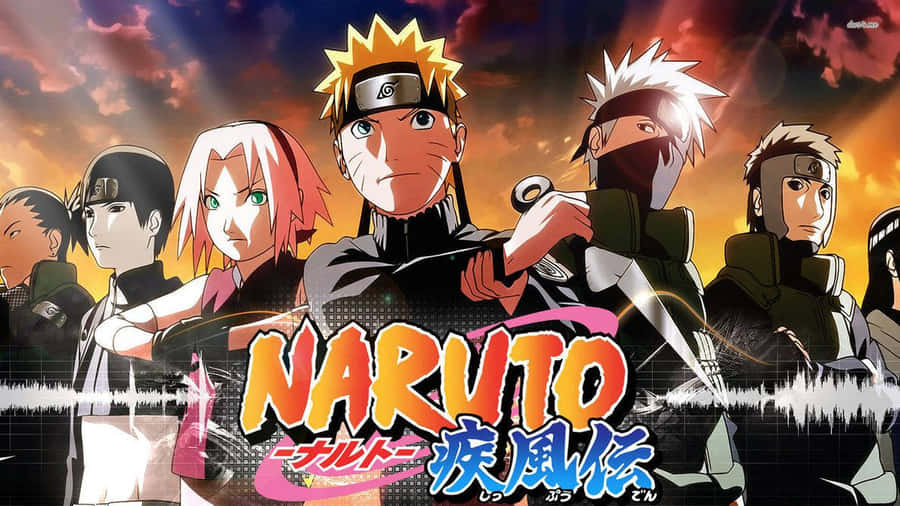
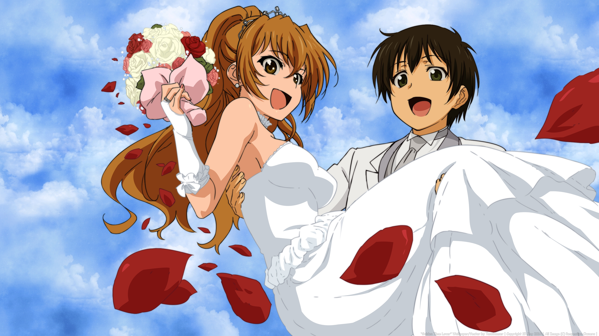

Gustos musicales
| Nombre |
Descripcion |
Imagen |
| Sword Art Online |
Sword Art Online es un Anime el cual va centrado en una trama la cual consiste
en como un chico de 15 años quedara atrapado en un mundo virtual junto a 10000
personas, para escapar debera cruzar los 100 pisos con el riesgo de morir para
siempre, viviendo solo y peleando, debera luchar por sobrevivir y asi liberar
a todos
|
 |
| Dragon ball |
Goku es un hombre el cual busca siempre ser mas fuerte, para poder enfrentarse
a sujetos mas fuertes que el, ademas de sus compañeros, las esferas del dragon y
dioses, pelar siempre esta presente
|
 |
| Naruto Shippuden |
La secuela directa del Anime clasico, continua las aventruas de Naurto Uzumaki, el chico de Konoha
regresa para seguir su camino Ninja asi como la busqueda de su amigo, con el entrenamiento de sus maestros,
amistades y asi tambien enemigos detras suyas, debera demostrar que podra ser el mejor Ninja y Hokage
|
 |
| Konosuba |
Un chico joven, un perdedor en su mundo, un dia morira "heroicamente" muerto por un infarto ante un tractor,
conocera a la diosa Aqua la cual le dara la oportunidad de reencarnar en un mundo magico, pero aun asi en este nuevo
mundo sigue siendo un perdedor, un equipo disfuncional, un "heroe" torpe y desventuras caoticas. Una historia rara
|
 |
| Golden Time |
Tada Banri, un chico el cual perdio la memoria tras un accidente, debe empezar una nueva vida, un chico normal, una chica
a la vista, y el eco de su pasado ser, con su vida nueva y sus recuerdos pasados tratando de abarcar los actuales
una constante lucha por poder seguir con una de sus dos vidas.
|
 |